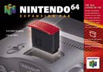

Le RAM-PACK

Le Ram Pack s'insère dans
votre Nintendo 64 (voir photo) et double ainsi sa mémoire qui passe
de 4 à 8 Mg !
L'utilisation première
du Ram Pack est de faire tourner des jeux en haute résolution (640X480).
Seuls les jeux réalisé
pour fonctionner avec cet extension profiteront de cette haute resolution
(Turok 2, Rogue Squadron, Extrem G2 etc...).
Mais il va sans dire que tous les
prochains titres de chez Nintendo deviendront compatibles avec l'extension
qui deviendra donc indispensable pour ceux qui voudront tirer le maximum
de leurs jeux.
Le Ram-pack ne se contente pas d'ameliorer la
resloution, il permet beaucoup d'autres petites ameliorations dans les
jeux qui l'utilisent.
Voici une petite liste de ses autres capacités:
Des animations
plus nombreuses et plus réalistes
Afficher un
plus grand nombre de couleurs
Une meilleur
Intelligence Artificielle
Des niveaux
et mondes plus grands
Plus de persos
ou véhicules
Plus de textures
Des Replays
plus longs (jeux de sports)
Des jeux plus
complexes
La sortie de
cette extension est imminente et meme si pour l'instant il ne semble pas
vraiment indispensable, on peut penser qu'il fait figure de bon achat à
long terme (les jeux qui l'utilisent vont etre de plus en plus nombreux)
pour tous les joueurs Nintendo 64 et son prix devrait être fixé
un peu en dessous de 1000 fb (150ff).